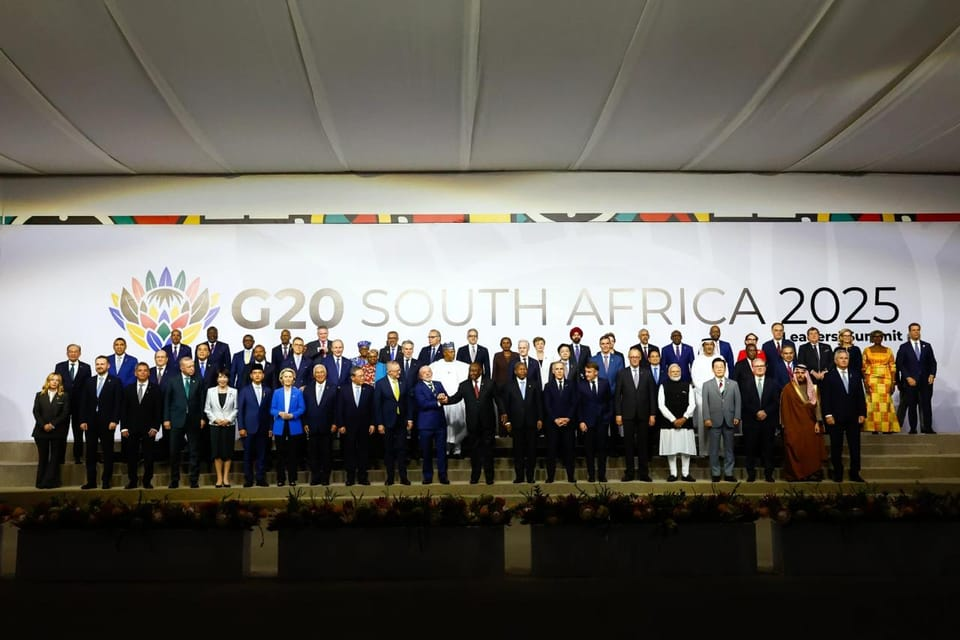

世界苦茶11月23日新闻 | 31条 | 台北副市长确认双城论坛

台北副市长确认双城论坛 | 中美两军举行海上安全磋商 | 特朗普称结束乌克兰战争计划非最终提议 | G20峰会在无美国情况下通过峰会宣言
苦茶数据
美元兑人民币：7.10（昨日7.10，前日7.11）
美元兑日元：157.12（昨日157.09，前日157.87）
上证指数：休市（昨日3834，前日3931) 标
普500指数：休市（昨日6602，前日6538）
比特币：87109（昨日84375，前日85423）
布伦特原油：62.52（昨日64.04，前日64.61）
中国新闻
• 中美两军举行海上军事安全磋商会议。
中美持续恢复军事沟通，两国军方在美国夏威夷举行海上军事安全磋商会议，探讨两军海空相遇典型案例并讨论改进安全问题措施。中国海军星期六在官方微信公众号发文称，中美两军星期二至四在夏威夷举行2025年度中美海上军事安全磋商机制第二次工作小组会议和年度会晤。文章称，双方在平等尊重的基础上进行了坦诚和建设性交流，主要就当前中美海空安全形势交换意见，探讨两军海空相遇典型案例，评估《中美海空相遇安全行为准则》年度执行情况，讨论改进中美海上军事安全问题的措施，并就明年工作小组会议议题交换意见。根据中方说法，双方一致认为，会议有助两军海空一线部队更专业安全地开展互动，有利双方避免误解误判，管控风险危机。
• 中国对高市言论抗议升级到联合国 传取消明年1月中日韩首脑会议。
中国对日本首相高市早苗涉台言论的抗议升级到联合国层面，北京据报也拒绝明年1月举行中日韩首脑会议。中国常驻联合国代表傅聪星期五向联合国秘书长古特雷斯致函，就高市早苗涉华言行阐明中国政府立场。傅聪说，高市早苗的涉台挑衅言论，是1945年日本战败以来日本领导人首次在正式场合鼓吹所谓“台湾有事就是日本有事”并与行使集体自卫权相关联，首次在台湾问题上表达试图武装介入的野心，首次对中国发出武力威胁，公然挑战中国核心利益。信函指出，在中国多次严正交涉和强烈抗议后，日本仍不思悔改，拒不撤回言论。中国对此强烈不满，坚决反对。
• 中国团队模拟针对马斯克旗下星链的大规模电子战。
中国研究人员模拟对埃隆·马斯克的 Starlink 进行大规模电子战 研究发现，在技术上可行在与台湾相当面积范围内对 Starlink 进行干扰，但需要极大规模，需用到 1000 架或更多无人机 数日内，数千台 Starlink 终端抵达，尽管俄罗斯竭力封锁通信，但仍恢复了战场上的指挥与控制。该事件在全球军界引发震动——尤其在北京。对中国人民解放军而言，为可能的台海作战做准备意味着必须回答一个紧迫问题：当敌方能接入由一万多颗卫星组成、能够跳频、适应并实时抵抗干扰的星座时，如何实现电磁优势？
• 中国神舟20号太空碎片危机：太空战争的催化剂。
中国“神舟二十号”碎片危机：是催生太空战争——还是促进和平的契机？分析人士称：飞船舷窗裂痕或预示北京与华盛顿在轨道碎片问题上将加强合作 一块微小的碎片引发了中国天宫空间站自三年前投入使用以来最严重的事故。这一事件凸显了地球日益扩大的轨道碎片云所带来的日益严峻威胁——这种恐慌可能促使中国以及包括美国在内的其他国家加快其碎片追踪和清除能力的步伐。许多此类系统本质上具有双重用途：同样用于安全降低废止卫星轨道的工具，也可能被改装用来使敌方航天器失效。
• 中国国航将减少大阪至上海等航线航班数量。
随着中国政府就日本首相高市早苗在国会答辩中有关所谓 “台湾有事” 的发言做出强烈反弹，并呼吁中国公民近期避免前往日本，中国国有大型航空公司宣布，从11月底开始将减少大阪至上海等航线的航班运营。中国国际航空公司就大阪至上海航线宣布，从本月30日起至明年3月下旬，两地的往返航班将从目前的每周21个减少到每周16个。东京至重庆航线，从12月1日起至明年3月下旬，往返航班将从目前的每周7个减少到每周4个。中国国际航空公司称减少航班是由于机材安排等原因。不过，据观察也有可能是受到了中国政府呼吁公民近期避免前往日本的影响。
印太新闻
• 台北副市长：双城论坛预计12月下旬举行。
台北市副市长林奕华证实，上海－台北城市论坛预计12月下旬举行，上海主办方刚赴台协商。综合ETtoday新闻云和华视新闻网等台媒报道，林奕华星期五受访时透露，上海台办人员星期四赴台协商双城论坛筹办事宜。按目前情况，有两个时间点均落在12月下旬，目前台北市政府正与上海主办方讨论。今年的双城论坛原定9月25日至27日在上海举行，但因将签署的两项合作备忘录细节尚未确定而临时延期。台北市政府近期申请上海市台办副主任李骁东等四人赴台，但上周传出台湾政府的大陆委员会不准李骁东赴台，令舆论揣测双城论坛再生变数。台陆委会主委邱垂正星期四指出，已掌握年底双城论坛举办时间，只要市府申请，中央就会批准。
• 台湾解禁福岛食品引质疑 官员：基于科学实证。
台湾全面解除对日本福岛食品长达14年的进口管制措施，引发蓝营质疑是“台湾有事”风波下的政治算计。台政府官员回应称，解禁基于科学实证，无关政治。综合台湾公共电视和华视新闻网报道，2011年福岛核灾后，台湾禁止福岛等日本五县食品进口，并要求辐射与产地证明。台湾卫生福利部食品药物管理署近年分阶段为禁令松绑，星期五宣布全面解禁，日本食品回归常态管理措施。食药署称，台湾自2011年起对日本食品辐射边境检验27万余批次，不合格率为零。食药署8月预告日本五县食品将回归一般管制后，未接获反对意见，因此调整为与他国食品管理一致。食药署特别提到，目前全世界对日本食品采取特定管制措施的国家和地区，仅剩中国大陆。
• 在北京施压之际，台湾军方为无人机技术拨款3200万美元以应对压力。
台湾军方在北京压力下为无人机技术拨款3200万美元 根据提交给台湾立法院的预算文件，国防部军备局将在2026年至2028年间投入超过新台币10.1亿元，用于一项“前瞻性多元整合发展计划”以发展无人平台，第一年将执行新台币5.07亿元。该计划旨在开发核心技术，使无人机在无全球定位系统支持下仍能运行、具备抗干扰能力并使用高密度电池——这些能力被视为在与北京发生冲突时的关键。该计划还将整合跨部会资源与产学研合作，推动本土化发展无人平台、国防系统及水面和水下载具。目标是建立创新的研发与制造集群，并强化台湾新兴的无人机产业生态。该计划涵盖从电光雷射与复合材料到抗干扰通信、导航与定位、无人平台以及近地轨道。
• 印度警方侦破一起价值80万美元的银行抢劫案，三人被捕。
印度警方侦破80万美元银行劫案，三人被捕 在一次大胆的7000万卢比抢劫案中，冒充中央银行官员的持枪人员抢劫了一辆ATM押运车，印度已有三人被捕。周六，南部城市班加罗尔的警方表示，他们已侦破此案，并追回了三天前被盗的5760万卢比现金。“我们的调查正按计划追回剩余款项，”班加罗尔警察局局长西曼特·库马尔·辛格在记者会上说。辛格随后告诉BBC，已有三名嫌疑人被拘留。“我们还在寻找另外两到三人，”他补充道。被捕人员包括现金运输公司CMS的员工戈帕尔·普拉萨德，前CMS员工J·哈维尔以及一名地方警员安纳帕·奈克。抢劫发生在班加罗尔拉尔巴格地区的光天化日下。窃贼冒称为印度储备银行官员。
科技新闻
• 分析师称，受人工智能行业强劲需求推动，存储芯片价格飙升。
存储芯片价格在人工智能领域强劲需求推动下暴涨：分析师称 一旦英伟达在其人工智能服务器中开始使用某些存储芯片，价格上涨将被进一步加速，Counterpoint Research分析师称，由于人工智能行业需求增加，存储芯片价格预计将持续大幅上升，而普通消费者购买新智能手机的成本可能因此上升。广告 Counterpoint Research 周四在一份报告中表示，继年初至今上涨 50% 之后，存储芯片价格预计将在今年第四季度上涨 30%，并在 2026 年再上涨 20%。
• 美议员拟提案：获《芯片法案》补贴厂商十年内禁止购买中国芯片设备。
众议院一个由两党议员组成的小组提出一项法案，拟在未来十年内禁止《芯片法案》的拨款受益者购买中国芯片制造设备。该法案针对一系列芯片制造工具，从复杂的光刻机设备，到将印制芯片的硅片切成小块的机器均包含在内。该法案由共和党众议员杰伊·奥伯诺尔特和民主党众议员佐伊·洛夫格伦共同提出。在参议院，民主党众议员马克·凯利和共和党众议员玛莎·布莱克本计划于12月提出该法案。议员提供的背景资料显示，中国已在芯片产业投资超 400亿美元，重点是制造设备，此类设备的市场份额也大幅增长。
• 谷歌必须每6个月将AI算力翻倍以满足需求。
谷歌的AI基础设施负责人告诉员工，该公司必须每六个月将其算力翻倍，以满足人工智能服务的需求。在 11月6日的一次全体会议上，谷歌云的副总裁阿明·瓦赫达特进行了一场题为 “AI基础设施” 的演示，其中包括一张关于“AI计算需求”的幻灯片。上面写着：“现在我们必须每6个月翻倍……在4-5年内实现下一个1000倍。”瓦赫达特在会议上说：“AI基础设施的竞争是AI竞赛中最关键且最昂贵的部分。”除了基础设施扩建之外，谷歌还通过更高效的模型和定制芯片来增强能力。瓦赫达特表示，公司拥有DeepMind这一巨大优势，后者在研究未来几年AI模型可能形态。
• 美国考虑允许英伟达对华出售H200芯片。
知情人士称，特朗普政府正在考虑批准向中国销售英伟达 H200 AI 芯片。随着双边关系的缓和，美国向中国出口先进技术的前景有所改善。知情人士称，负责美国出口管制的商务部正在审查是否改变其禁止此类芯片对华销售的政策，但他们强调计划仍有可能发生变化。一位白宫官员拒绝置评，但称：“本届政府致力于确保美国在全球技术领域的领导地位，并维护我们的国家安全。”英伟达未直接就这一审查发表评论，但表示，现行监管规定使公司无法在中国提供具有竞争力的AI数据中心芯片，从而将这一庞大的市场拱手让给迅速发展的外国竞争对手。
经济新闻
• 李强：G20须正视问题 推动各方重回团结协作正轨。
美国元首缺席二十国集团领导人峰会之际，中国总理李强呼吁二十国集团正视问题，推动各方重回团结协作的正轨。为期两天的二十国集团领导人峰会当地时间星期六在南非约翰内斯堡登场。美国总统特朗普以“南非白人遭受迫害”为由抵制峰会，并要求不发布联合宣言。据新华社报道，李强当天在峰会第一阶段会议发言时指出，当前世界经济再次面临巨大挑战，单边主义、保护主义甚嚣尘上，各种经贸限制和对立对抗增多。他强调，各方利益诉求存在差异，全球合作机制存在不足是阻碍国际社会团结比较突出的原因。
• 美国实际退还关税的可能性肯定会引发一场巨大的“混乱”。
为什么美国关税退款如今成为切实可能，以及一场巨大的“烂摊子” 如果最高法院在未来数周裁定反对唐纳德·特朗普的贸易征税，最大的问题将是潜在的关税退款如何实施 玛丽琳-乔伊·切尔尼在其35年的贸易律师生涯中数千次对美国政府提出质疑，为进口商追回被华盛顿错误征收的关税，成绩令人艳羡。“我这辈子提了太多抗议案，我跟团队开玩笑说海关可能会想，’我觉得她抗议得太多了’，”切尔尼是桑德勒，特拉维斯与罗森伯格律师事务所的管理合伙人。“我那些不得不打到法庭的抗议案？我会说有95%，96%是成功的。但最高法院可能真的会蚕食我的成功率。
• 降低对华稀土依赖 欧盟与南非签矿产协议。
欧洲联盟与南非周四签署矿产合作协议，双方同意加强在南非这个资源丰富国家的矿产与金属探勘、开采及精炼合作，以确保绿色转型所需的供应链安全。20国集团 (G20) 峰会召开前，欧盟执委会主席冯德莱恩与南非总统拉马福萨先行会晤，并见证这项奠定未来合作基础的 “矿产合作协议”在约翰尼斯堡签署。由于中国近期宣布进一步限制稀土出口，欧盟积极寻求摆脱对中国稀土依赖，争取关键矿产及稀土元素的供应，这些资源不仅对电池等电子产品至关重要，也是欧盟推动绿色转型不可或缺的材料。冯德莱恩在记者会上说：“我们需要这些原料来推动清洁能源转型，无论是在非洲本地还是欧洲地区。”
俄乌战争
**• 欧洲多国、加拿大和日本领导人11月22日表示，美国28点新计划草案中有“对实现公正持久和平至关重要的内容”，但“需进一步完善”。 **
声明重申“不应以武力改变边界”，并对拟议中的限制乌克兰武装力量的条款表示关切，称“这将使乌克兰在未来容易遭受攻击”。特朗普则表示28点计划并非最终方案。欧盟、美国、乌克兰、英国、法国、德国以及意大利官员23日将在日内瓦会面，进一步讨论28点计划。美国国务卿鲁比奥、陆军部长德里斯科尔、乌克兰总统幕僚长叶尔马克、特使乌梅罗夫等人将参加。丹麦、爱沙尼亚等8个北欧和波罗的海国家领导人22日与泽连斯基会谈，承诺继续提供武器，尊重乌克兰主权。知情人士称，美国中东问题特使威特科夫、特朗普女婿库什纳等人与俄罗斯特使德米特里耶夫10月底在迈阿密的会面制定了有利于俄罗斯利益的28点新计划。美国国务院、国家安全委员会等部门的官员对此并不知情。乌克兰事务特使基思·凯洛格亦被排除在迈阿密会谈之外。
• 特朗普称，美国结束乌克兰战争的计划并非对基辅的“最终提议”。
特朗普称美国结束乌克兰战争的方案并非给基辅的“最终提议” 在乌克兰盟友对该提案表示担忧后，美国总统唐纳德·特朗普表示，一项旨在结束俄乌战争的美国方案并非他给基辅的“最终提议”。周六早些时候，来自欧洲、加拿大和日本的领导人表示，该方案包含“实现公正持久和平所必需的要素”，但“需要进一步完善”，并对改变边界和对乌克兰军队设限表示担忧。周日，英国、法国、德国、美国和乌克兰的安全官员将在瑞士日内瓦会晤。泽连斯基总统此前警告称，面对美国施压接受被视为对莫斯科有利的方案，乌克兰正面临“我们历史上最艰难的时刻之一”。特朗普已给乌克兰到11月27日接受该28点方案的最后期限。
• 特朗普称美国新的和平计划并非对乌克兰的“最终提议”。
白宫提出的新和平计划并非华盛顿对乌克兰的最终出价，美国总统唐纳德·特朗普在11月22日对记者表示。由特朗普特使史蒂夫·威特科夫与克里姆林宫助手基里尔·德米特里耶夫共同起草的这份28点计划，要求乌克兰向俄罗斯做出大幅领土让步，削减军队规模，并在宪法中承诺永不加入北约。白宫已给基辅到11月27日决定是否接受这些与莫斯科的最大化目标高度一致的要求，否则将失去美国支持。特朗普11月22日的言论暗示仍有谈判余地。当天记者问及该计划是否为他对乌克兰的最终提议时，特朗普回答不是。“不，这不是我的最终提议，”他说。
• 乌克兰与美国将在瑞士商谈替代和平方案。
冲突欧洲 乌克兰与美国将在瑞士商谈替代和平方案 2025年11月22日乌克兰总统泽连斯基不愿直接接受美国总统特朗普提出的和平计划。他已确定派往瑞士与美国代表进行谈判的小组成员。乌克兰的欧洲支持国家代表也将与美国进行谈判。广告 据乌克兰前国防部长乌梅罗夫透露，乌克兰代表将在未来几天与美国代表在瑞士会面。双方将就美国总统特朗普提出的和平计划展开谈判。他没有透露谈判的具体时间和地点。乌梅罗夫作为国家安全和国防委员会秘书，是谈判代表团成员。他表示，会谈将讨论和平计划的主要要点。乌梅罗夫在社交媒体上表示，乌克兰重视美方倡议，但将带着明确的自身利益参与谈判。
• 匈牙利的欧尔班支持美国的乌克兰提案，意在阻挠对基辅的援助。
布鲁塞尔——长期反对对乌支持的匈牙利总理维克多·欧尔班，正将华盛顿一项有争议的新外交推动视为阻止对基辅拨付数十亿资金的机会。欧尔班在周六致欧盟委员会主席乌尔苏拉·冯德莱恩的一封信中呼吁欧盟签署那份包含28项条款的美国提案条款，该提案将要求乌克兰放弃领土并将其军力减半，同时将华盛顿在乌克兰重建利润中占据50%的份额。此番干预正值欧盟领导人举行危机磋商，商讨如何应对由白宫特使史蒂夫·威特科夫在未征询欧洲盟友意见下制定、并将对莫斯科作出大幅让步的该等提案。
• 德国外长警告：俄乌协议不可操之过急。
在美国提出结束俄乌战争的28点计划后，德国外长瓦德富尔发出警告，呼吁各方冷静应对、避免仓促达成协议。他还透露，欧洲正在紧锣密鼓地制定替代方案。德国外长瓦德富尔认为，美国提出的结束俄乌战争的计划不太可能迅速落实。这位基民盟政治家周五向德广联表示：“我们现在最不需要的，就是慌乱和仓促。”他指出：“虽然各方都希望尽快实现停火，但我们需要时间思考，什么才是能够带来持久和平的可靠基础。我不认为这很快能实现。” 瓦德富尔指出：“我们或许正处于停火协议的最后阶段，但是否最终会达成真正的和平协议。
• 开源情报组织表示，自9月以来俄罗斯很可能已在扎波罗热州占领超过15个村庄。
芬兰开源情报团体“黑鸟集团”称，自九月以来，俄罗斯军队似乎已在扎波罗热州东南部夺取了15个以上村庄，利用天气和乌克兰兵力不足扩大攻势。黑鸟集团的埃米尔·卡斯特赫尔米表示，俄罗斯趁秋季天气条件使乌克兰无人机对俄军作用减弱之机，以及乌克兰的兵力危机，在扎波罗热州东部取得推进。卡斯特赫尔米在11月21日对基辅独立报表示：“俄罗斯今秋取得的最大成果主要在扎波罗热和第聂伯罗彼得罗夫斯克地区。这里显然是乌克兰的一大问题点，因为他们就是没能阻止俄军推进。
• 在过去一天里，俄罗斯对乌克兰的袭击至少造成1人死亡、13人受伤。
当地时间11月22日，当地政府表示，过去24小时内俄罗斯袭击已造成至少1人死亡、至少13人受伤。乌克兰空军11月22日报道，俄罗斯军队夜间发射1枚弹道导弹和104枚“Shahed”式无人机，防空部队击落其中89架。顿涅茨克州东部，州长瓦迪姆·菲拉什金表示，过去一天内1人死亡、1人受伤。哈尔科夫州东北部，州长奥列格·西涅胡博夫表示，两名分别为50岁和61岁的男子受伤。第聂伯罗彼得罗夫斯克州中东部，州长弗拉基斯拉夫·海瓦年科表示，一名57岁女性受伤。扎波罗热州东南部，州长伊万·费多罗夫表示，一名49岁女性受伤。赫尔松州南部，州长奥列克桑德尔·普罗库丁表示，6人受伤。敖德萨州南部，州长奥列格·基佩尔。
世界新闻
**• 二十国集团领导人11月22日在峰会开幕当天通过了约翰内斯堡峰会宣言。这是G20峰会首次于开幕当天通过联合宣言。 **
峰会宣言共包含122条内容，敦促在气候相关灾害和主权债务水平等影响贫困国家的问题上采取更多全球行动。美国与南非关系紧张，抵制参加此次峰会。南非总统发言人称，宣言在未征求美国意见的情况下起草。白宫指责南非利用G20主席国身份破坏原则。美国为下届G20主席国，提议派遣驻南非大使馆临时代办参加轮值主席国交接仪式。该提议遭到南非拒绝。南非将指派同级别外交官员在外交部进行交接。
• 教皇利奥十四世已接受一名被控虐待的西班牙主教辞职，这是该教宗已知的首例。
教宗利奥十四接受一名被指控虐待的西班牙主教辞职，这是该新任教宗首次已知撤职案例 罗马——教宗利奥十四周六接受了一位患病的西班牙主教的辞职，该主教正接受教会调查，涉嫌在1990年代性侵一名年轻神学院学生，这是该新教宗已知的首次撤销被指控虐待的主教的案例。梵蒂冈的一则一行声明称，利奥已接受76岁的加的斯主教拉斐尔·索尔诺萨的辞呈。声明未说明原因，但索尔诺萨在去年年满75岁时向教宗递交了辞呈，这是主教的正常退休年龄。不过直到西班牙《国家报》本月早些时候报道索尔诺萨最近被教会法庭立案调查前，该辞呈尚未被接受。自2018年以来该报披露了西班牙天主教会数十年的虐待与掩盖问题。
• 英国《每日邮报》出版商就以6.54亿美元收购电讯报媒体集团展开排他性谈判。
英国《每日邮报》出版商进入独家谈判，拟以6.54亿美元收购电讯报媒体集团 伦敦——英国《每日邮报》的出版商已进入独家谈判，拟以6.54亿美元收购电讯报媒体集团，此举将把两家传统上支持右翼保守党的新闻集团联手。Daily Mail and General Trust plc周六表示，谈判旨在敲定一笔5亿英镑的交易条款，从阿布扎比支持的企业Redbird IMI手中收购《电讯报》。在两年前，外资对英国新闻机构所有权的担忧曾阻碍Redbird IMI接管《每日电讯报》及其姐妹周日报的尝试，此次拟议交易即发生在此背景下。
• 七名保镖因涉嫌参与墨西哥市长被杀案被逮捕。
七名保镖因涉嫌参与墨西哥市长遇害被捕 当局表示，七名保镖因涉嫌参与一位受欢迎的墨西哥市长遇害案已被逮捕。乌鲁阿潘市市长、直言不讳批评贩毒集团暴力的卡洛斯·曼佐于11月1日在一次纪念亡者节的公开活动中遭枪杀。米却肯州检察长办公室在一则简短声明中称，这些公职人员因“可能以不作为的方式参与实施加重杀人罪”而被拘留。此前警方在周三逮捕了一名被描述为谋杀主谋的男子，官员称该男子与一个势力强大的贩毒集团有关联。位于首都墨西哥城以西的米却肯州检察长办公室表示，这七名保镖由州和联邦官员包括国家警卫队共同逮捕。美联社报道，周五，军队和特工在一处市政大楼将嫌疑人带出，该地点靠近曼佐被杀的地点。
• 特朗普表示将终止对明尼苏达州索马里移民的法律保护。
美国总统唐纳德·特朗普周五晚表示，他将“立即”终止居住在明尼苏达的索马里移民所享有的临时法律保护，这是他再次抨击一项旨在限制遣返的计划——其政府此前已多次试图削弱该计划。明尼苏达拥有全国规模最大的索马里社区。许多人逃离东非国家长期内战，并被该州的社会项目所吸引。然而，受特朗普此项宣布影响的人数可能非常少：国会委托的一份报告在八月估计，全国受益于该计划的索马里人数为705人。国会于1990年创建了授予“临时保护身份”的该计划，目的是避免将人们遣返回受自然灾害，内乱或其他危险情形影响的国家。
• 最高法院阻止了认定德州国会选区地图可能具有种族偏见的命令。
美国最高法院周五暂时阻止了一项下级法院的裁决，该裁决认定由特朗普推动的德州2026年国会重划地图可能基于种族进行歧视。由大法官塞缪尔·阿利托签署的命令将在未来几天内保持有效，同时法院考虑是否允许这一对共和党有利的新地图在中期选举中使用。由保守派组成的多数大法官曾因下级法院裁决过于接近选举而阻止类似裁决。该命令发布约一小时后，德州向最高法院请求干预，以避免随着三月国会初选临近出现混乱。大法官们此前在若干月前的国会重划案件中曾阻止下级法院的裁决，最近的例子包括阿拉巴马和路易斯安那。
• 联合国气候谈判未能达成新的化石燃料承诺。
联合国气候谈判未能就新的化石燃料承诺达成一致 在激烈争执之后，于巴西贝伦举行的联合国气候峰会COP30以一项未直接提及导致地球变暖的化石燃料的协议收场。包括英国和欧盟在内的80多个国家希望会议承诺加快停止使用石油、煤炭和天然气的步伐，这一结果令人沮丧。但产油国坚持应被允许利用其化石燃料资源发展经济。会议期间，联合国表示担心将全球气温升幅限制在工业化前水平以上1.5摄氏度内的努力已失败。哥伦比亚一名代表愤怒批评COP主席团在周六的最后一次全体会议上不允许各国对该协议提出异议。